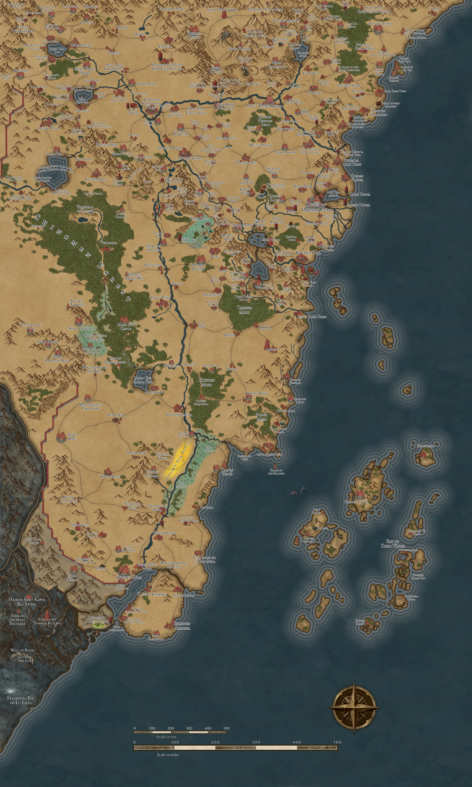

The Fragile Peace
A peace holds between the Lion and the Unicorn for as long as the terms hold. The terms are still being written.
A Legend of the Five Rings Chronicle

The Imperial Envoy Miya Misato was charged with brokering a peace between the Lion and the Unicorn, and died of her wounds in a camp guarded by two armies before she reached the front. Doji Setsuna — Crane Clan, Doji Bureaucrat, Emerald Magistrate — served as her Personal Advisor, and carries the work of the peace now as her giri. Her own errand runs alongside it: the trilateral agreement for Toshi Ranbo, for the Crane, and for her grandmother.
This is her archive. It holds who she is, the ground the embassy crosses, the people met along the way, and the record of a chronicle already underway.
Doji Setsuna
The dossier — identity, doctrine, household, career and concealments — and the living sheet she is played from, with a Ring & Skill roller for the table.
The PartyThose She Travels With
Monban, Midori and Kazumi, who hold the road with her — the three who walked part of it and are off stage, and the three she carries by memory.
ChronicleThe Chronicle
53 sessions and two interludes, March 2025 to August 2026 — the road east, the duel, the Snow Plain, the courts, and a war ended by a document nobody was ordered to sign.
Dramatis PersonaeDramatis Personae
Everyone the record names. What is legible is what Setsuna was there for; the rest is masked, and there is nothing behind the mask.
AtlasAtlas of Rokugan
The Emerald Empire mapped clan by clan and region by region, with a gazetteer of every place the chronicle has reached.
LoreThe Emerald Empire
Clans and families, the things carried, and the code by which a samurai is measured.
Player Notes✎ Player Notes
The player's own working papers — what Setsuna knows, what she is owed, what is still open, and what to raise at the next session.